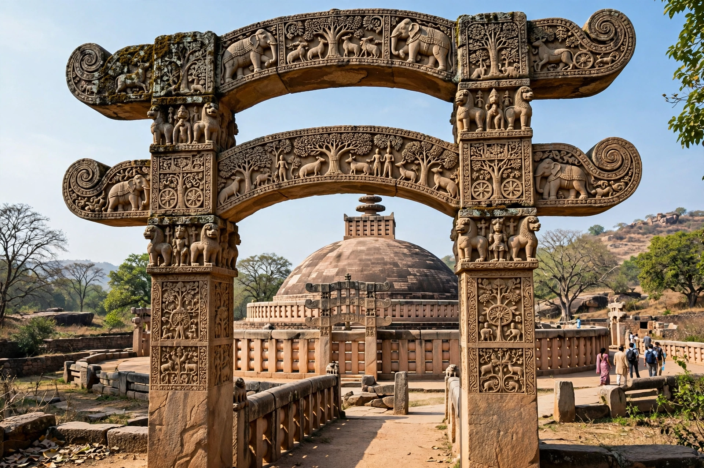

| Sanchi | |
|---|---|
 The Great Stupa and its torana gateway | |
| Location | Raisen district, Madhya Pradesh, India |
| Founded | 3rd century BCE (Ashoka) |
| Religion | Buddhism |
| UNESCO | World Heritage Site (1989) |
Sanchi is a Buddhist complex in Madhya Pradesh, India, famous for its Great Stupa, one of the oldest stone structures in India. The site comprises stupas, temples, monasteries, and monolithic pillars built over a period spanning the 3rd century BCE to the 12th century CE.
The Great Stupa (Stupa No. 1) was originally commissioned by the Mauryan emperor Ashoka in the 3rd century BCE as a simple brick hemisphere said to enshrine relics of the Buddha. It was enlarged in stone under the Shunga dynasty in the 2nd century BCE, and its four elaborately carved gateways (toranas) were added under the Satavahanas around the 1st century BCE–1st century CE. The torana reliefs narrate episodes from the Buddha's life and the Jataka tales in an aniconic style: the Buddha is represented by symbols such as the empty throne, the bodhi tree, footprints, and the wheel of dharma.
Stupa No. 3 held relic caskets inscribed with the names of Sariputra and Mahamoggallana, the Buddha's two chief disciples; these relics were taken to Britain in the 19th century and ceremonially returned to India in 1952, and are now displayed annually at the Chetiyagiri Vihara in Sanchi.
The abandoned site was documented by General Henry Taylor in 1818 and excavated in the 19th century. Major restoration was carried out under Sir John Marshall between 1912 and 1919. The Buddhist monuments at Sanchi were inscribed as a UNESCO World Heritage Site in 1989. The Great Stupa also appears on the Indian ₹200 banknote.
Categories: Buddhist sites in Madhya Pradesh · World Heritage Sites in India · Stupas in India